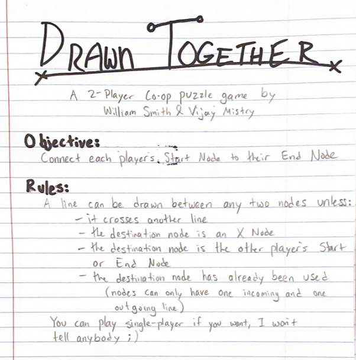

Games


Apocalypse: Green Wave
Play Apocalypse: Green Wave
This 2D Platformer and zombie shooter was my foray into game design with Unity and Github!
It introduced me to the game development process as we got used to basic dev tools in about one month.
My Contributions:
- Lead Producer
- Level Design
- Programming player control and physics, camera, game systems
- Original music
- Art implementation
Phuong Mai Do (pdo@wpi.edu): Lead artist
Aidan Bryar (afbryar@wpi.edu): Additional programming
Created in Unity
December 2022
Slid Not Stirred
Play Slid Not Stirred
The fast-paced sidescroller where you platform as a glass sliding along the bar.
Slid Not Stirred was the winning game of IGDA WPI's Cutthroat Game Jam, which had the theme Don't Stop! (~30 participants)
My main takeaway from this game was how to be flexible and to adapt within tight deadlines.
We were given some fun restrictions like all sound effects originating from our voices, having to include a prominent MS Paint animation, and more!
My Contributions:
- Level Design
- Programming player damage handling, Game systems
- QA
- Audio remastering
Jacob Antepli (jaantepli@wpi.edu): Lead programmer and designer
Sarah Bodkin (sbodkin@wpi.edu): 2D Art
Zach Adams (zadams@wpi.edu): 2D Art
Created in Unity
April 2023
Hollow Revival
Play Hollow Revival
A character-focused narrative fantasy RPG made in two weeks.
I honed my leadership skills as we undertook this large project.
We each wrote a character quest, and I learned to trust my teammates as we brought the quests together into a cohesive narrative.
You can watch a full, voice-acted playthrough here.
My Contributions:
- Design Lead
- Writer for Porter
- Combat design
- QA, editing
Cierra O'Grady (cmogrady@wpi.edu): Programmer, writer for Quent
Owen Pugh (orpugh@wpi.edu): Writer for Cyril
Elijah Delcastillo (eedelcastillo@wpi.edu): Writer for Eri
Created in Twine
December 2023
Cross-Stitch
Play Cross-Stitch
White to Grey - Grey to Black - Black to White
This simple yet head-scratching puzzle game is my first solo project!
I'm super proud of the mechanics I was able to implement in a short period of time.
This game taught me about the iterative approach to level design and
challenged me to improve player readability without using words or tutorials.
Created with Perlenspiel 3.3
February 2024
When it Rains
Play When it Rains
An arcade-style game that captures the manic feeling of Tetris in bite-size form.
This was my next solo project after Cross-Stitch.
I wanted to make a game that was small in scope, but nicely polished and complete, while also dipping my toes into 2D pixelart.
Can you reach a score of 100?
Created with Perlenspiel 3.3
February 2024
Drawn Together
A cozy, cooperative, hand-drawn puzzle game.
I built up my puzzle design skills, creating ten levels that smoothly introduce several unique mechanics.
This was my first time making a multiplayer game, and it was very enriching to design for and playtest
with pairs of players, rather than just one.
My Contributions:
- Design Lead
- Puzzle Design
- Rules writing
- Title & Level Art
Vijay Mistry (vcmistry@wpi.edu): Game Design, Level Design

Created on paper
September 2024
Paper Jump
Play Paper Jump
A simple endless runner created in a couple of days.
I made this game to get acclimated with the Unreal Engine and coding with Blueprints.
I also had fun drawing a running animation for the first time.
Help with bug fixes from Ellys Gorodisch (emgorodisch@wpi.edu)
Created in Unreal 5.4
October 2024
Crab Defense
Play Crab Defense
A tower defense game with a twist!
The tower you must defend is a crab that walks forward after each wave,
leaving some of its precious defenses behind.
I learned how to use Godot through this game and built up a variety of skills throughout development.
My contributions:
- Game Design and balancing
- Game Programming
- 2D Art for some turrets and enemies
- Production, managing the Asset List and tracking tasks
Vijay Mistry (vcmistry@wpi.edu): Design & Programming
Jack Sheeran (jjsheeran@wpi.edu): Design & 2D Art
Created in Godot 4.3
December 2024
Fly Fishing
Play Fly Fishing
A cozy fishing game on a calm, starry night. Cast your line and time your click to reel in a fish before it gets away!
Land the big one in Fly Fishing!
Fly Fishing was made in Dragonfly, a game engine based in C++ written from scratch.
It supports the creation of various game objects that can respond to events, with audio, visuals, and input from the SFML library.
My game contributions:
- Programming the Fish Class
- ASCII art of fish sprites, background
- Design of randomized fish attributes
- Production, managing the Asset List and tracking tasks
Abraham Goodman (abgoodman1@wpi.edu): Programming, UI Art
Created in Dragonfly
March 2025
Mind Games
Mind Games is a guessing game, using a modified deck of cards.
The Jacks and Queens are removed, and the dealer holds four Aces face down.
There are four players and a dealer who guides gameplay, but does not get dealt a hand.
To start the game, four cards are dealt to each player.
Each of the players guesses what the right suit will be and plays a card.
The dealer calls out “Red” or “Black”, and the player that played the highest sum of that color based on the value of the cards they played wins.
Kings are worth 12, and all other cards use their printed value. The winner of each round gets the losing cards that were just played.
If there is a tie, the dealer reveals the suit by flipping an ace (they should memorize which one is which so that they don’t have to check).
The sum for that round then is only based on that revealed suit, not just the color.
If there is still a tie after that, the cards are left in the middle, no longer in play, as a bonus prize for the next round.
There are four total rounds of increasing stakes. In the first round, each player plays one card, in the second round they play two cards, then three, then four.
After each round, each player is dealt an additional two cards into their hand. After the fourth round, the player who won the highest number of cards wins.
In the case of a tie, the cards are shuffled together and the tied players are dealt four more cards in a sudden death round where they play two cards.
The catch is that the dealer isn’t actually randomly picking a suit before each round.
At the start of the game they secretly choose one of the players to be a “telepath”.
After cards are played in a round, the dealer decides the color based on the highest sum the telepath played.
It’s still possible for the telepath to lose if other players bet big and get lucky a few times in a row, but the telepath has a significant advantage.
My Contributions:
- Game Design
- Production
Matthew Neuffer (mkneuffer@wpi.edu): Design
Justin Smith (jmsmith2@wpi.edu): Design
March 2025
Overgrown
A simple endless runner created in a couple of days.
Cerated in Unreal 5.4
Coming Spring 2025
Garden and a Goat
A simple endless runner created in a couple of days.
Cerated in Unreal 5.4
Coming in 2025
Projects

Software Engineering
I was the Project Manager of a Software Engineering team of 11 students
tasked with creating a hospital website from scratch.
For much of the team, it was our first experience with Typescript and React, but we were able to
implement many features like multi-floor pathfinding, employee and service request management,
database hosting through AWS, an AI assistant, and an animated 3D map within 6 weeks.
We managed the project with Jira and Agile methodologies.
Lesson Plan Design
I led a community project
working with the US Forest Service to develop lesson plans for students in New Hampshire.
Myself and 3 other WPI students stayed in Lincoln, New Hampshire for about 2 months working with
Brendan Leonardi, Program Manager and Field Technician at Hubbard Brook Experimental Forest.
We conducted background research, a focus group with Hubbard Brook staff, 7 interviews with local science educators,
systematic observations of tours of the forest, created 4 lesson plans,
and piloted 3 of them with local middle school students.
YouTube
I have been managing a gaming YouTube channel for over 7 years.
I showcase some of the most difficult and astounding levels made in the Super Mario Maker 2 community.
I have amassed over 3600 subscribers and 5 million views.
On average, I upload a new video twice a week and the aspect of this project I'm most proud of is that
I've never gone a week without uploading a new video.
As a result of this, I have become well-versed in software like Davinci Resolve, Adobe Photoshop, and OBS.
I also frequently livestream myself playing on Twitch.
Speedrunning
One of my passions in gaming is speedrunning. I love delving deeply into the mechanics of a game and finding obscure oversights the devs missed.
I have been involved in speedrunning in Super Mario Maker 2, Super Mario Bros, and Mario Wonder,
and I was even invited to PACE Summer 2023, a charity event where I played RubberRoss's Mario Maker levels at a world record pace.
RubberRoss is a well-known YouTuber and streamer notorious for making very hard Mario stages, and he was floored by my ability to circumvent his challenges, as seen below.
You can see my full run with his reaction here
or the edited-down version here.
Education
I am pursuing a BS in Interactive Media and Game Development at Worcester Polytechnic Institute in Massachusetts.
I'm in the class of 2025, with a cumulative GPA of 3.88.
I am incredibly grateful for the opportunities opened up to me through WPI, including both the
Software Engineering project, and the Lesson Design Project in New Hampshire.
More than just knowledge of computer science, WPI has taught me time management and communication skills.
Most schools have 2 semesters with students taking 5 or 6 classes each, but WPI has quarters.
So I only have 3 courses at a time, but they are completed twice as fast.
This leads to a very fast-paced schedule, but I have been able to adapt and thrive in this environment.
Additionally, I started my college experience during COVID, and now I am completely comfortable working remotely, in-person, or hybrid.
WPI prides itself on its emphasis of project-based learning, which I believe prepares me for a job
in game development much better than lecture-based learning.
Video Editing
I currently am the video editor for Stone Coast Community Church in Rhode Island.
Since March 2024, I have been editing and uploading the weekly services to the church's YouTube channel,
as well as creating 1-minute shorts from each recording.
I have been attending and volunteering on the tech team at this church since 2016.
Below is an image of some editing work I did for a Mother's Day video with the church's Youth Group.
AlphaJoust
An AI project that uses a genetic algorithm to train a model to play the classic arcade game, Joust.
Named in reference to AlphaZero and AlphaGo, the models that mastered chess and Go, we wanted to create an AI that learned how to play a simpler game.
We used Unity to run a recreation of Joust, and NeuroEvolution of Augmenting Topologies, or NEAT to set up the genetic algorithm.
You can view our presentation here.
Business Card TCG
I was accepted to be a Conference Associate at GDC 2025.
I thought it would be fun to try something unique for my business cards in order to stand out.
There are 4 sets of 16 cards, each highlighting a game or project I've been a part of.
They also each have their own stats so that card owners can battle each other in a tiny TCG.
Rules:
The card with the higher SPD stat acts first. They inflict damage according to the card's ATK stat, reducing the target's DEF stat.
If a card's DEF is reduced to 0, the card is defeated.
If the target survived the attack, they act in the same manner, and play continues in a turn-based fashion.

About
Hello! My name is Will and I am a student at Worcester Polytechnic Institute in Massachusetts with a passion for game design. So far, I have finished 10 games, 7 of which were in collaboration with other WPI students. I will be graduating with a Bachelor of Science degree in Interactive Media and Game Development in May 2025. I'm interested in all aspects of game development, with a primary focus on game programming and design.
smithwm210@gmail.com
(774) 991-5477
LinkedIn